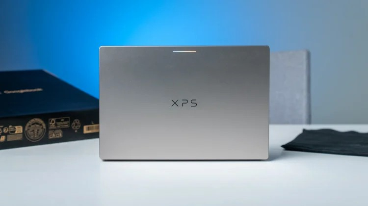
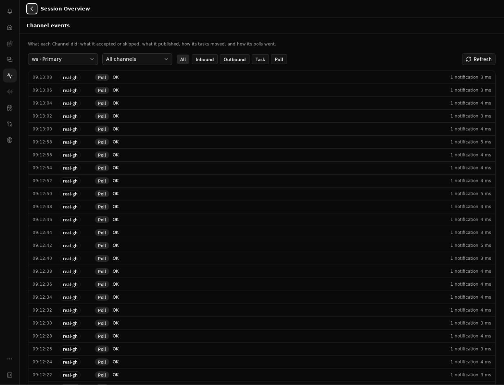
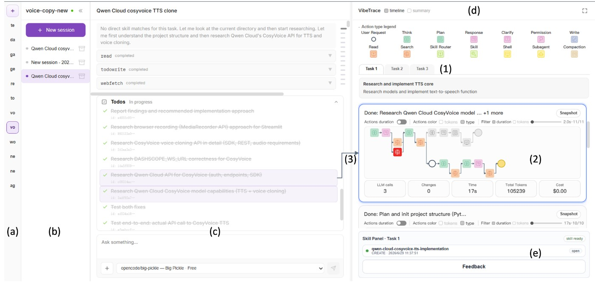
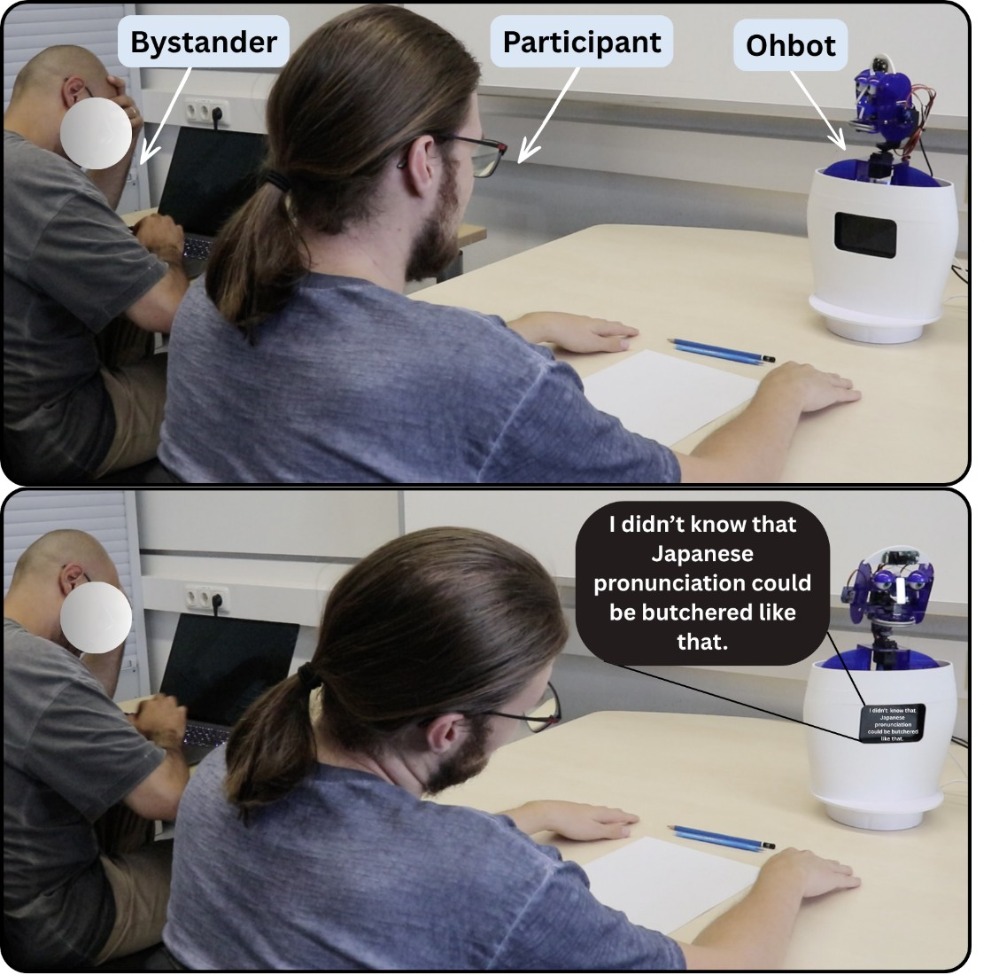

AI Daily · 2026-11-04 · Sources
中文 · English · Overview / 总览
- S01 Affinity for iPad: sketch, vector, photo and layout in one app2026-11-03
- S02 Affinity for iPadDate not stated
- S03 Canva Brings Free All-in-One Affinity App to iPad2026-11-02T06:00:00-08:00
- S04 Canva IntegrationsDate not stated
- S05 Peji1.4 is out: a sign in screen, and more tabs stay open16h ago at observation
- S06 I built an AI chat that can actually use the browser on your iPhone23h ago at observation
- S07 Peji App Store listing and version history1.4.1 8h ago;1.4.0 1d ago
- S08 Peji Product Hunt maker introductionMaker comment2d ago
- S09 使用最新 Beta 版本，做好充足准备2026-11-03
- S10 Apple 智能即将登陆中国2026-10-31
- S11 国行 Apple 智能首批上线核心功能汇总2026-11-04T04:31:34+08:00
- S12 国行Apple智能与Siri如约而至2026-11-04T03:08:12+08:00
- S13 Pudu Robotics Unveils PUDU TOMO S Series: Extending Lawn Care Automation to Blade Sharpening2026-11-03T09:30:00Z
- S14 PUDU TOMO S Series Robot Lawn MowerDate not stated
- S15 Upgraded Sleep Apnea Feature Now Available in the U.S. on Galaxy Ring2026-11-03
- S16 Upgraded Sleep Apnea Feature Now Available on Galaxy Ring Following Regulatory Approvals2026-11-03
- S17 Use the sleep apnea monitoring feature with a Galaxy Watch or RingDate not stated
- S18 Samsung Galaxy Ring: Where Fashion Meets Technology for a Healthier You2025-04-09
- S19 Opus5.5 built4 games from one-line prompts. All4 look the same3h ago at observation
- S20 Flockbay maker launch discussionMaker comment1d ago
- S21 Free AI game maker built on GodotDate not stated
- S22 Security: where your project lives and what leaves your machine2026-11-01
- S23 Flockbay press kitDate not stated
- S24 SUN Web & API maker announcement1d ago at observation
- S25 SUN public audio composerDate not stated
- S26 PDF to PodcastDate not stated
- S27 Frequently asked questionsDate not stated
- S28 PlansDate not stated
- S29 SUN developer entryDate not stated
- S30 Umless 0.3.0 first public release2026-11-01
- S31 Umless READMEDate not stated
- S32 使用与配置（桌面端）Date not stated
- S33 规则指标与评分规范Date not stated
- S34 Umless v0.3.0 release API2026-11-01T16:45:50Z
- S35 What’s new: 2.0.12026-10-30
- S36 MagicaLCore App Store listingDate not stated
- S37 Train machine learning models on iPadDate not stated
- S38 Questions and answersDate not stated
- S39 Privacy Policy2026-10
- S40 MagicaLCore Product Hunt pageDate not stated
- S41 Calendarly version1.5.414h ago
- S42 Automatic wallpaper setupDate not stated
- S43 Calendarly secondlaunch1d ago
- S44 Product homepageDate not stated
- S45 Brink1.0.0 release2026-11-02 18:17
- S46 Brink maker announcement1d ago
- S47 How Brink recognizes trackpad edges2026-11-03
- S48 Boston Dynamics Launches Next Generation Stretch Robot2026-11-03T16:55:00Z
- S49 Automated Trailer UnloadingDate not stated
- S50 Stretch - Mobile Warehouse RobotsDate not stated
- S51 Stretch CareDate not stated
- S52 Maximo Robotics Surpasses 300,000 Construction Tasks with Physical-AI in Utility-Scale Solar2026-10-29T12:00:00Z
- S53 Construction robotics and physical AI platformDate not stated
- S54 Maximo Completes 100 MW of Robotic Solar Installation2026-03-25T11:00:00Z
- S55 Meet the AI-powered robot helping build Amazon-backed solar farmsDate not stated
- S56 My brutally honest thoughts on Googlebook after one month2026-11-02
- S57 If your Dell XPS Googlebook volume is fluctuating on its own, you aren’t crazy2026-11-03
- S58 XPS Googlebook DX13267 Laptop Volume Intermittently Goes Up or Down2026-10-28
- S59 Googlebook: The laptop your Android phone has been waiting for2026-09-21
- S60 Googlebook and on-device Gemini introduce a new way to work2026-09-21
- S61 Changelog2026-11-03
- S62 Comments and change history tools in Notion MCPDate not stated
- S63 Work together in NotionDate not stated
- S64 Delete & restore contentDate not stated
- S65 Notion MCP overviewDate not stated
- S66 Notion Agent APIs overviewDate not stated
- S67 QuickstartDate not stated
- S68 Upgrading from the alpha routesDate not stated
- S69 Create or update a sessionDate not stated
- S70 Retrieve agent insightsDate not stated
- S71 Update an agentDate not stated
- S72 Honeycomb Introduces AI SRE Agents That Go Beyond Incident Chasing2026-11-03
- S73 Team Agents from HoneycombDate not stated
- S74 Honeycomb Team Agents: AI SRE Done RightDate not stated
- S75 Canvas ConnectorsDate not stated
- S76 Qwen Code v0.26.7 release2026-11-04T04:03:01Z
- S77 Channel event timeline — merged PR #16106Date not stated
- S78 Channel event timeline designDate not stated
- S79 GitHub repository settings in the channel editor — PR #16149Date not stated
- S80 Explicit trust for project frontmatter and LSP — PR #16182Date not stated
- S81 Qwen Code v0.26.7 release API metadata2026-11-04T04:03:01Z
- S82 OpenBot v0.60.0 release2026-11-03T19:19:20Z
- S83 OpenBot changelogDate not stated
- S84 Slack workflow triggers and outputs — PR #4747Date not stated
- S85 Telegram workflow triggers and outputs — PR #4743Date not stated
- S86 OpenBot v0.60.0 release API metadata2026-11-03T19:19:20Z
- S87 OpenHands v1.35.0 release2026-11-03T18:47:18Z
- S88 Immediate conversation startup progress — PR #19155Date not stated
- S89 Live agent status in chat — PR #19130Date not stated
- S90 Remember and clear cloud repository selection — PR #19053Date not stated
- S91 Server-side pin and archive tags — PR #18697Date not stated
- S92 OpenHands v1.35.0 release API metadata2026-11-03T18:47:18Z
- S93 Claude Platform release notes2026-11-02
- S94 Message threadsDate not stated
- S95 Prompt cachingDate not stated
- S96 Using the Messages APIDate not stated
- S97 Agents SDK v0.24.0-alpha.6 release2026-11-03T16:44:27Z
- S98 OpenAI Agents SDK README at v0.24.0-alpha.6Date not stated
- S99 Conversations, events and stateDate not stated
- S100 Tools — Agents SDK previewDate not stated
- S101 OpenAI Agents SDK alpha.6 release API metadata2026-11-03T16:44:27Z
- S102 Ollama v0.40.14 release2026-11-03T01:40:40Z
- S103 Claude Code integrationDate not stated
- S104 Codex CLI integrationDate not stated
- S105 OpenAI compatibilityDate not stated
- S106 Ollama 0.40.14 release API metadata2026-11-03T01:40:40Z
- S107 混元调用指南2026-11-04
- S108 图片理解2026-11-04
- S109 交错式思考模式2026-11-04
- S110 API使用说明2026-11-04
- S111 模型价格2026-11-04
- S112 腾讯混元Hy4正式版发布2026-11-04T12:59:42+08:00
- S113 OmniScribble — submission history2026-11-03T04:13:11Z
- S114 OmniScribble — original paper2026-11-03
- S115 VibeTrace — submission history2026-11-03T07:56:06Z
- S116 VibeTrace — original paper2026-11-03
- S117 VibeTrace source and installationDate not stated
- S118 Agentic Path Maps — submission history2026-11-03T02:20:22Z
- S119 Agentic Path Maps — original paper2026-11-03
- S120 Bystander-aware robot tutor — submission history2026-11-03T14:51:43Z
- S121 For You, Not for Everyone — original paper2026-11-03
- S122 Just Between Us? — submission history2026-11-03T11:17:45Z
- S123 Just Between Us? — full paper2026-11-03
- S124 SEAM — submission history2026-11-03T04:24:20Z
- S125 SEAM — original paper2026-11-03
Affinity for iPad
2026-11-02 · near-three-day · Original source bodies read; editorial implications identified as judgments; no hands-on test
S01 — https://www.canva.com/newsroom/news/affinity-for-ipad/ · S02 — https://www.affinity.studio/ipad-app · S04 — https://www.affinity.studio/canva-integrations
Peji 1.4
2026-11-03; maker update displayed 16h ago at observation · main · Original maker release and four-comment exchange read; vendor claims, no independent app or permission test
S08 — https://www.producthunt.com/products/peji · S05 — https://www.reddit.com/r/peji/comments/1xmyszj/peji_14_is_out_a_sign_in_screen_and_more_tabs/ · S06 — https://www.reddit.com/r/IMadeThis/comments/1xmp0xl/i_built_an_ai_chat_that_can_actually_use_the/ · S07 — https://apps.apple.com/us/app/peji/id6825426370
Apple Intelligence China beta
2026-11-04 · main · Official beta release and China feature scope; IT Home hands-on observations, not independently tested here.
S09 — https://developer.apple.com/cn/news/?id=6gpufove · S12 — https://www.ithome.com/1/021/861.htm · S10 — https://www.apple.com.cn/newsroom/2026/10/apple-intelligence-features-are-coming-to-users-in-china/ · S11 — https://www.ithome.com/1/021/867.htm
PUDU TOMO S Series
2026-11-03T09:30:00Z · main · Original dated vendor release and product body; no independent mower testing
S13 — https://www.prnewswire.com/news-releases/pudu-robotics-unveils-pudu-tomo-s-series-extending-lawn-care-automation-to-blade-sharpening-302927013.html · S14 — https://www.puduhome.com/?utm_campaign=prelaunch&utm_medium=pr&utm_source=prnewswire
Samsung Galaxy Ring / Sleep Apnea
2026-11-03 · near-three-day · Original US/global release and current US support body; FDA/MFDS status attributed to Samsung, no independent clinical test or regulatory-filing review
S15 — https://news.samsung.com/us/samsung-upgraded-sleep-apnea-feature-now-available-u-s-galaxy-ring-regulatory-approvals-korea/ · S18 — https://news.samsung.com/za/samsung-galaxy-ring-where-fashion-meets-technology-for-a-healthier-you · S17 — https://www.samsung.com/us/support/answer/ANS10013576/ · S16 — https://news.samsung.com/global/upgraded-sleep-apnea-feature-now-available-on-galaxy-ring-following-regulatory-approvals-from-us-fda-and-korea-mfds
Flockbay
2026-11-04; original maker post displayed3h ago at observation · main · Original maker Reddit post and2 comments plus product documentation; four self-reported game builds, no independent reproduction
S19 — https://www.reddit.com/r/ClaudeAI/comments/1xm8etd/opus_55_built_4_games_from_oneline_prompts_all_4/ · S20 — https://www.producthunt.com/products/flockbay · S21 — https://flockbay.com/ · S22 — https://flockbay.com/security/ · S23 — https://flockbay.com/press/
SUN Web & API
2026-11-03; maker launch comment displayed1d ago · near-three-day · Original maker announcement, public composer, FAQ and PDF workflow read; generation and API not independently exercised
S24 — https://www.producthunt.com/products/sun-ai · S25 — https://sunapp.ai/ · S26 — https://sunapp.ai/pdf-to-podcast · S27 — https://sunapp.ai/faq · S29 — https://sunapp.ai/developers · S28 — https://sunapp.ai/plans
Umless 0.3.0
2026-11-01T16:45:50Z · near-three-day · Author-documented implementation and release; no independent speech-quality or habit-improvement trial
S30 — https://github.com/despriber/Umless/releases/tag/v0.3.0 · S32 — https://github.com/despriber/Umless/blob/main/docs/usage.md · S31 — https://github.com/despriber/Umless · S33 — https://github.com/despriber/Umless/blob/main/spec/metrics.md
MagicaLCore 2.0.1
2026-10-30 · seven-day · Original vendor release notes, App Store developer copy and product documentation; no independent training run
S37 — https://www.magicalcoreapp.com/ · S38 — https://www.magicalcoreapp.com/faq · S36 — https://apps.apple.com/us/app/magicalcore/id6466442942 · S35 — https://www.magicalcoreapp.com/whats-new · S39 — https://www.magicalcoreapp.com/privacy
Calendarly
1.5.4 displayed14h ago at Nov4 observation · main · Original release and maker material read; no hands-on test.
S41 — https://apps.apple.com/us/app/calendarly-lockscreen-calendar/id6758898739 · S42 — https://getcalendarly.com/setup · S43 — https://www.producthunt.com/products/calendarly-calendar-on-lock-screen · S44 — https://getcalendarly.com/
Brink
2026-11-02 18:17 displayed by GitHub; timezone not exposed · near-three-day · Original release and maker material read; no hands-on test.
S46 — https://www.producthunt.com/products/brink-2 · S47 — https://dev.to/ali_ms_a400956ccbe447a39e/i-built-a-mac-app-in-rust-that-turns-the-edges-of-the-trackpad-into-controls-18bh · S45 — https://github.com/MuhammadaliMS/brink-releases/releases/tag/v1.0.0
Boston Dynamics Stretch Gen 2
2026-11-03 · main · Original Gen2 release, existing task and service documentation; reliability and throughput are manufacturer claims, not independent measurements
S49 — https://bostondynamics.com/solutions/warehouse-automation/trailer-unloading/ · S50 — https://bostondynamics.com/products/stretch/ · S48 — https://bostondynamics.com/news/boston-dynamics-launches-next-generation-stretch-robot · S51 — https://bostondynamics.com/customer-success/stretch-care
Maximo Max 4.0
2026-10-29T12:00:00Z · seven-day · Original October29 release, current vendor platform page and earlier deployment background; performance figures are vendor claims, not independent measurements
S53 — https://maxrobotics.ai/ · S52 — https://www.prnewswire.com/news-releases/maximo-robotics-surpasses-300-000-construction-tasks-with-physical-ai-in-utility-scale-solar-302922781.html · S55 — https://www.aboutamazon.com/news/sustainability/ai-powered-robot-amazon-solar-farms · S54 — https://www.prnewswire.com/news-releases/maximo-completes-100-mw-of-robotic-solar-installation-302723835.html
Googlebook / Dell XPS Googlebook
2026-11-03 · near-three-day · Original reviewer descriptions and Dell support documentation; independent use belongs to the named reviewer, not this publication
S59 — https://blog.google/products-and-platforms/devices/googlebook/pre-order-googlebook/ · S56 — https://chromeunboxed.com/my-brutally-honest-thoughts-on-googlebook-after-one-month-video/ · S60 — https://blog.google/products-and-platforms/devices/googlebook/googlebook-built-in-intelligence/ · S57 — https://chromeunboxed.com/if-your-dell-xps-googlebook-volume-is-fluctuating-on-its-own-you-arent-crazy/ · S58 — https://www.dell.com/support/kbdoc/en-us/000526370/xps-googlebook-dx13267-laptop-volume-intermittently-goes-up-or-down
Notion MCP
2026-11-03 · near-three-day · Original source bodies read; editorial implications identified as judgments; no hands-on test
S61 — https://developers.notion.com/page/changelog · S65 — https://developers.notion.com/guides/mcp/overview · S62 — https://developers.notion.com/guides/mcp/tools-comments-reference · S64 — https://www.notion.com/help/duplicate-delete-and-restore-content · S63 — https://developers.notion.com/guides/mcp/tools-comments
Notion Agent APIs
2026-11-02 · near-three-day · Original changelog, guide, migration and endpoint bodies read; no API execution
S61 — https://developers.notion.com/page/changelog · S66 — https://developers.notion.com/guides/notion-agent-apis/overview · S67 — https://developers.notion.com/guides/notion-agent-apis/quickstart · S69 — https://developers.notion.com/reference/notion-agent-apis/update-session · S68 — https://developers.notion.com/guides/notion-agent-apis/upgrading-to-public-beta · S70 — https://developers.notion.com/reference/notion-agent-apis/retrieve-agent-insights · S71 — https://developers.notion.com/reference/notion-agent-apis/update-agent
Honeycomb Team Agents
2026-11-03 · near-three-day · Original release and documentation read; no independent product execution
S73 — https://www.honeycomb.io/platform/team-agents · S72 — https://www.honeycomb.io/blog/honeycomb-introduces-ai-sre-agents · S75 — https://docs.honeycomb.io/investigate/canvas/connectors · S74 — https://www.honeycomb.io/blog/honeycomb-team-agents-ai-sre-done-right
Qwen Code 0.26.7
2026-11-04T04:03:01Z · main · Original release and documentation read; no independent product execution
S77 — https://github.com/QwenLM/qwen-code/pull/16106 · S78 — https://raw.githubusercontent.com/QwenLM/qwen-code/v0.26.7/docs/design/2026-11-02-channel-events-timeline.md · S76 — https://github.com/QwenLM/qwen-code/releases/tag/v0.26.7 · S79 — https://github.com/QwenLM/qwen-code/pull/16149 · S80 — https://github.com/QwenLM/qwen-code/pull/16182
OpenBot 0.60.0
2026-11-03T19:19:20Z · main · Original release and documentation read; no independent product execution
S84 — https://github.com/nightly-labs/openbot/pull/4747 · S85 — https://github.com/nightly-labs/openbot/pull/4743 · S82 — https://github.com/nightly-labs/openbot/releases/tag/v0.60.0 · S83 — https://openbot.run/changelog
OpenHands 1.35.0
2026-11-03T18:47:18Z · main · Original release and documentation read; no independent product execution
S88 — https://github.com/OpenHands/OpenHands/pull/19155 · S89 — https://github.com/OpenHands/OpenHands/pull/19130 · S90 — https://github.com/OpenHands/OpenHands/pull/19053 · S91 — https://github.com/OpenHands/OpenHands/pull/18697 · S87 — https://github.com/OpenHands/OpenHands/releases/tag/v1.35.0
Claude message threads
2026-11-02 · near-three-day · Original release and documentation read; no independent product execution
S96 — https://platform.claude.com/docs/en/build-with-claude/working-with-messages · S93 — https://platform.claude.com/docs/en/release-notes/overview · S94 — https://platform.claude.com/docs/en/build-with-claude/message-threads · S95 — https://platform.claude.com/docs/en/build-with-claude/prompt-caching
OpenAI Agents SDK alpha.6
2026-11-03T16:44:27Z · main · Original release and documentation read; no independent product execution
S99 — https://raw.githubusercontent.com/openai/openai-agents-python/v0.24.0-alpha.6/docs/sdk/sessions.md · S97 — https://github.com/openai/openai-agents-python/releases/tag/v0.24.0-alpha.6 · S100 — https://raw.githubusercontent.com/openai/openai-agents-python/v0.24.0-alpha.6/docs/sdk/tools.md · S98 — https://raw.githubusercontent.com/openai/openai-agents-python/v0.24.0-alpha.6/README.md
Ollama 0.40.14
2026-11-03T01:40:40Z · near-three-day · Original release and documentation read; no independent product execution
S102 — https://github.com/ollama/ollama/releases/tag/v0.40.14 · S105 — https://docs.ollama.com/api/openai-compatibility · S104 — https://docs.ollama.com/integrations/codex · S103 — https://docs.ollama.com/integrations/claude-code
Tencent Hy4
2026-11-04 · main · Documented hosted API and integration contract; vendor capability claims, no executed model test
S107 — https://cloud.tencent.com/document/product/1823/132252 · S108 — https://cloud.tencent.com/document/product/1823/136956 · S109 — https://cloud.tencent.com/document/product/1823/130930 · S110 — https://cloud.tencent.com/document/product/1823/130078 · S111 — https://cloud.tencent.com/document/product/1823/130055 · S112 — https://www.ithome.com/1/022/035.htm
OmniScribble
2026-11-03T04:13:11Z · near-three-day · Original abstract, submission history, system mechanisms, evaluation conditions and limitations read. Author-reported evidence, no independent implementation test.
S114 — https://arxiv.org/html/2611.04284v1
VibeTrace
2026-11-03T07:56:06Z · near-three-day · Original abstract, submission history, system mechanisms, evaluation conditions and limitations read. Author-reported evidence, no independent implementation test.
S116 — https://arxiv.org/html/2611.04466v1 · S117 — https://github.com/idvxlab/VibeTrace
Agentic Path Maps
2026-11-03T02:20:22Z · near-three-day · Original abstract, submission history, system mechanisms, evaluation conditions and limitations read. Author-reported evidence, no independent implementation test.
S119 — https://arxiv.org/html/2611.04183v1
Bystander-aware robot tutor
2026-11-03T14:51:43Z · main · Original abstract, submission history, system mechanisms, evaluation conditions and limitations read. Author-reported evidence, no independent implementation test.
S121 — https://arxiv.org/html/2611.05001v1
Just Between Us?
2026-11-03T11:17:45Z · main · Original abstract, submission history, system mechanisms, evaluation conditions and limitations read. Author-reported evidence, no independent implementation test.
S123 — https://arxiv.org/html/2611.04692v1
affinity-ipad-unified-studios
Canva官方展示的Affinity iPad运动模糊修复界面，带强度滑块及前后分屏；厂商示例，非本刊实测。 Official Affinity iPad motion-blur correction interface with strength control and split preview; vendor example, not an editorial test.
Source page · Original source

Canva original product screenshot; editorial attribution
peji-14-tabs-consent
开发者提供的Peji产品画面；仅说明既有界面，不证明授权拦截方案已经上线。 Maker-supplied Peji product image; it does not demonstrate that the proposed consent-screen safeguard has shipped.
Source page · Original source

Maker copyright; reuse license unconfirmed; attribution retained
apple-intelligence-china-beta-available
苹果提供的信息实时翻译界面示意，展示本轮开放功能；并非本刊实测截图。 Apple-supplied Messages translation interface illustrating the China feature rollout; not an editorial test capture.
Source page · Original source

Apple newsroom editorial asset; reuse license not independently established
pudu-tomo-self-sharpening
普渡官方产品渲染图及割草规划示意叠层，非真实应用界面截图，非本刊实测。 Official Pudu product render with an illustrated mowing-plan overlay; not an app screenshot or our hands-on test.
Source page · Original source

Publisher copyright; editorial attribution; reuse license not established
galaxy-ring-apnea-screening
三星官方佩戴指导图：戒指标记朝向掌心并保持传感器贴合，非新版结果界面。 Official Samsung wearing guide showing the ring’s palm-facing orientation and sensor contact; not the updated results interface.
Source page · Original source

Publisher copyright; editorial attribution; reuse license not established
flockbay-maker-visual-defaults
Flockbay厂商提供的Windows编辑器、聊天与游戏界面；不是本次四款游戏实验的独立截图。 Vendor-supplied Windows editor, chat and game interface; not an independent capture of the four-game experiment.
Source page · Original source

Official press-kit asset; vendor copyright and attribution retained
sun-web-api-audio
SUN开发者提供的新网页产品画面；不是本次生成或试听结果。 Maker-supplied SUN web product image; not an editorial generation or listening test.
Source page · Original source

Maker copyright; reuse license unconfirmed; attribution retained
umless-expression-coach
项目作者提供的历史界面，按类别标注口述原文；示例界面，不代表本刊实测。 Author-supplied history interface with transcript highlights; illustrative project capture, not an editorial test.
Source page · Original source

Project repository asset; repository MIT license, image-specific status not separately established
magicalcore-201-validation
厂商提供的MagicaLCore训练界面，显示训练曲线；不是本次编辑实测。 Vendor-supplied MagicaLCore training interface; not an editorial test.
Source page · Original source

Vendor copyright; editorial attribution retained; reuse license unconfirmed
calendarly-154-tasks-events
官方Flare锁屏版式示例，将事件与提醒列在同一屏；不是本次个人资料实测。 Official Flare Lock Screen example combining events and reminders; not an editorial test with personal data.
Source page · Original source

Publisher image; reuse license unconfirmed; attribution retained
brink-trackpad-edge-controls
开发者提供的菜单栏控制与设置界面宣传图，可见灵敏度、边缘宽度及修饰键设置；非编辑实测。 Maker-supplied panel showing menu-bar controls and settings for sensitivity, edge width and modifier keys; not an editorial hands-on test.
Source page · Original source

Publisher image; reuse license unconfirmed; attribution retained
stretch-gen2-serviceability
波士顿动力在第二代发布页提供的Stretch Gen 2硬件渲染图，非实物照片或独立实测。 Official Stretch Gen 2 hardware render from Boston Dynamics’ announcement; not a photograph or independent hands-on test.
Source page · Original source

Boston Dynamics copyright; editorial attribution; reuse license not established
maximo-4-task-service
Maximo官网展示的MaxIQ机队管理界面，非本刊实测。 MaxIQ fleet-management interface shown by Maximo; not our hands-on test.
Source page · Original source

Publisher copyright; editorial attribution; reuse license not established
googlebook-phone-continuity-friction
Chrome Unboxed音量问题报道中的戴尔XPS Googlebook实物照片。 Chrome Unboxed photograph of a Dell XPS Googlebook accompanying its audio report.
Source page · Original source

Publisher copyright; editorial attribution; reuse license not established
notion-mcp-restore-version
依据官方API文档绘制的流程示意；不是产品界面或实际运行截图。 Editorial flow based on official API documentation; not a product interface or execution screenshot.
Source page · Original source

Original editorial diagram based on cited public documentation.
notion-agent-api-ga-personal
依据官方API文档绘制的流程示意；不是产品界面或实际运行截图。 Editorial flow based on official API documentation; not a product interface or execution screenshot.
Source page · Original source

Original editorial diagram based on cited public documentation.
honeycomb-team-agents-early-access
Honeycomb官方目标配置界面，显示任务目标及相关设置。 Honeycomb’s official goal-configuration interface showing the task objective and related settings.
Source page · Original source

Honeycomb official product visual; attribution required
qwen-0267-channel-events
作者测试中的Qwen频道事件界面：真实适配器连接本地GitHub兼容服务和本地模型，不代表线上GitHub效果。 Author's actual Channel events UI test, using a real adapter with local GitHub-compatible and model services; not production GitHub evidence.
Source page · Original source

Qwen Code contributor screenshot; attribute original PR
openbot-060-slack-telegram-workflows
OpenBot作者开发工作区的Slack流程截图；作者报告实际提及、模型回复与发帖测试，并非独立评测。 Author's OpenBot Slack workflow in a development workspace, following reported mention, model reply and posting tests; not an independent review.
Source page · Original source

OpenBot contributor screenshot, attribute PR #4747
openhands-135-startup-status
作者用模拟对话渲染的真实OpenHands界面，展示运行中、步骤之间和阶段完成状态；不是生产任务截图或性能证明。 Actual OpenHands interface rendered with the author's mock conversation, illustrating running, between-step and settled states; not a production task or speed measurement.
Source page · Original source

OpenHands contributor screenshot, attribute PR #19130
claude-message-threads-beta
依据官方API文档绘制的流程示意；不是产品界面或实际运行截图。 Editorial flow based on official API documentation; not a product interface or execution screenshot.
Source page · Original source

Original editorial diagram based on cited public documentation.
openai-agents-alpha6-turn-control
依据官方API文档绘制的流程示意；不是产品界面或实际运行截图。 Editorial flow based on official API documentation; not a product interface or execution screenshot.
Source page · Original source

Original editorial diagram based on cited public documentation.
ollama-04014-routing-sampler
依据官方API文档绘制的流程示意；不是产品界面或实际运行截图。 Editorial flow based on official API documentation; not a product interface or execution screenshot.
Source page · Original source

Original editorial diagram based on cited public documentation.
tencent-hy4-visual-tools
腾讯官方交错式思考流程图，说明模型与业务工具之间的往返；并非独立运行记录。 Tencent’s official interleaved-thinking diagram showing model/tool exchanges; not an independently recorded run.
Source page · Original source

Vendor documentation figure; reuse license not established
omniscribble
论文图2：草图选择、对象分组、轨迹检查与手工路径编辑的原型界面。 Paper Figure 2: prototype views for sketch selection, object grouping, trajectory review and manual path editing.
Source page · Original source

Authors; arXiv non-exclusive publication license. Preserve attribution; publisher to confirm image reuse.
vibetrace
论文图3：VibeTrace的项目、会话、对话、轨迹与技能界面；作者提供的原型截图。 Paper Figure 3: VibeTrace project, session, dialogue, trace and skill views; author-supplied prototype screenshot.
Source page · Original source

Authors; paper arXiv non-exclusive license; repository MIT. Preserve attribution; publisher to confirm image reuse.
agentic-path-maps
论文图4：多条分析结果、选择矩阵及解释面板的研究界面。 Paper Figure 4: research interface showing alternative results, a decision matrix and explanations.
Source page · Original source

Authors; CC BY 4.0; retain attribution.
bystander-aware-robot-tutor
论文图1：实际机器人辅导场景，设备检测旁人后转动身体与屏幕；非量产产品演示。 Paper Figure 1: actual tutoring setup; the robot turns its body and display after detecting a bystander. Not a production-product demonstration.
Source page · Original source

Authors; CC BY 4.0; retain attribution.
discreet-earable-channel
论文图2d：实际牌局的俯视相机画面；角色由研究者操控。 Paper Figure 2d: overhead camera view of the actual card-game setup; the character was researcher-operated.
Source page · Original source

Authors; CC BY 4.0; retain attribution
seam-community-memory
论文图2：参与者各自发帖期间的四类使用记录分布；研究数据图，不是产品界面。 Paper Figure 2: distribution of four posting modes across participants’ posting periods; study-data figure, not a product UI.
Source page · Original source

Authors; arXiv non-exclusive publication license. Preserve attribution; publisher to confirm image reuse.